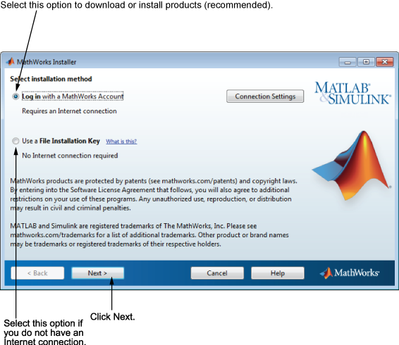

자동 설치 또는 수동 설치 선택
MathWorks® 계정을 사용하여 설치할 것인지 또는 파일 설치 키를 사용하여 설치할 것인지를 선택합니다. 인터넷에 연결되어 있는 경우 MathWorks 계정으로 로그인하여 설치 옵션을 선택된 채로 두고(디폴트 설정임) 다음을 클릭합니다. 설치 시 MathWorks 계정에 로그인하고, 설치할 라이선스를 선택한 후 다른 인스톨러 대화 상자의 프롬프트 메시지를 따릅니다. MathWorks 계정을 사용하는 것이 가장 쉬운 설치 방법입니다.
설치 시 인터넷에 연결되어 있지 않은 경우 파일 설치 키 사용 옵션을 선택하고 다음을 클릭합니다.

참고: Windows 시스템의 경우 인스톨러는 기본적으로 설치를 진행하는 사용자의 시스템 프록시 설정을 사용합니다. 프록시 서버가 설치를 진행하는 사용자의 로그인을 필요로 하는 경우 로그인 정보를 입력하라는 프롬프트 메시지가 표시됩니다. |
인터넷에 연결하기 위해 프록시 서버가 필요한 경우 연결 설정을 클릭합니다. 연결 설정 대화 상자에서는 서버 이름, 포트, 암호를 입력할 수 있습니다.